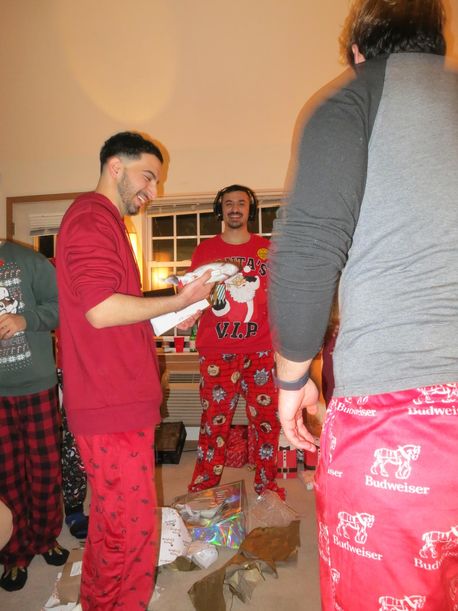
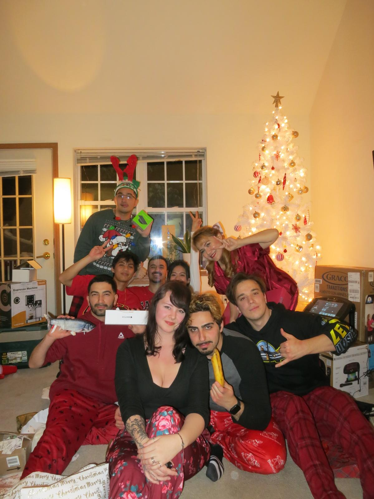

A Magical First Christmas
Embracing the Christmas Spirit
Even though we don’t usually celebrate Christmas back in my home country, this year felt magical — mostly thanks to my girlfriend, who made sure we fully embraced the Christmas spirit.
We spent the week watching Christmas movies, and when the actual day arrived, snow began falling outside our home — it felt like something straight out of a film.
The Gathering and the Gifts
We had a beautiful gathering with our friends, played games (with prizes!), and exchanged gifts we had drawn by name a week earlier. I received an awesome pair of headphones — something I really needed.
A Meaningful First Christmas
Since it was my first time truly celebrating Christmas, I think this gift became one of the best Christmas presents I’ve ever received. The whole experience made the holiday feel extra meaningful and memorable.